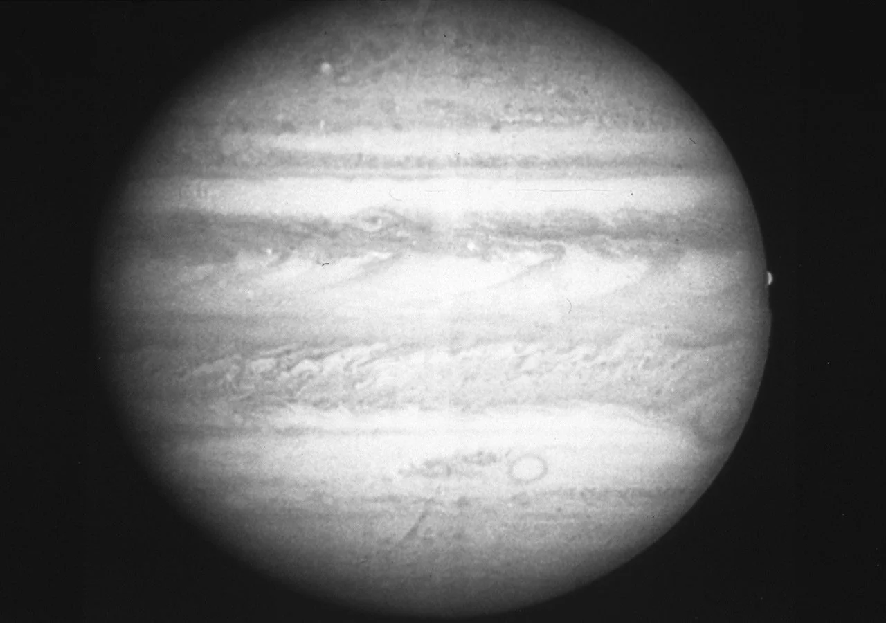

Jupiter

Overview
Jupiter is the fifth planet from the Sun and the largest in the solar system, more than twice as massive as all the other planets combined. It is a gas giant made mostly of hydrogen and helium, with no solid surface to stand on. Its colorful stripes are bands of clouds blown by powerful winds. Jupiter's Great Red Spot is a giant storm bigger than Earth that has been raging for hundreds of years.
Interesting Facts
- More than 1,300 Earths could fit inside Jupiter.
- Jupiter's four largest moons, Io, Europa, Ganymede, and Callisto, were discovered by Galileo in 1610.
Quick Facts
- Type: Gas giant
- Distance from Earth: 365.7-601.8 million miles
- Size: 88,846 miles in diameter
- Discovery: Known since ancient times; Galileo made the first detailed telescope observations in 1610